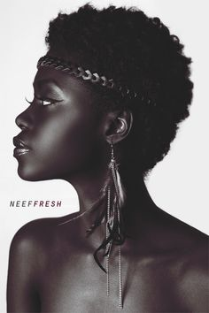

Finding humor in Born a Crime

The book Book Trevor Noah is such an educational book on religion,culture and life at large.It was a difficult childhood experience for Trevor Noah Through humor,Trevor and his mother Patricia pulled through tough situations,connected and managed their relationship which gave them a sense of wholesomeness in the community.Not only did humor twist and turn painful experiences for them but also played a huge role in enabling people to manage and control themselves in horrible phases of challenges.
“...Samson was my superhero.He was my He-man,a guy beating a thousand people to death with the jawbone of a donkey...”Trevor witty vibes about his experience in the Sunday school.His mom never wanted his mind never to get polluted by popular culture and the Boyz|| Men who were never allowed in his mother’s home.
“Ah,that’s the devil talking,Trevor.” “No, because Jesus is in control,and if Jesus is in control and we pray to Jesus ,he would let the car start,but he hasn’t therefore…” “No Trevor,sometimes Jesus puts obstacles on your way to see if you can overcome them...”.Normally,when our parents speak and raise their voices,we oftenly shut up and stay silent in respect.It wasn’t the case for both of them.They would argue and argue and surprisingly,Trevor was always set with comebacks.They would always argue.In this instance,he always came up with excuses to prevent them from going to the three church services,but his mum being an ardent believer of Christ,she would never buy into them.
Under what he called ‘Apart hate’,Trevor,his mum and his younger brother faced a tough situation when his mum threw him out of a moving car after being jeopardized by black men who belonged to the Xhosa community realized that Patrcia was Xhosa,who were stereotyped as promiscuous and unfaithful.Trevor expresses it humorously of how the whole situation was,from how he landed on the ground with a smack,his mum following him, to how they ran and back to their usual arguments of why Patricia ignored God’s voice about not going to church.As obvious,they had a good laugh afterwards.
Who is to be blamed for manipulation in marriage?
How I wish people would get a heads up before tying knots with narcissists. It’s always all fun and good until you move in together,honeymoon comes to an end and tough times kick in. You start facing reality,knowing each other’s true colors. Blame games become your habit and before you know,the strongest of all teaches the other a lesson. A life changing lesson. Why do some marriages boil down to divorce and even worse situations like murder?
“When a woman loves,she loves for real...”,says R.Kelly. This is justified by Nambuyiselo’s experience with Abel.She endures pain,suffering and abuse in the name of love,I mean marriage. Such was a true definition of a toxic marriage.Narcissist men do all manner of manipulation to submissive women. It’s in order for the man to be the head of the house,but the meaning is distorted to being the commander in chief. It happens for a series of reasons including overall discontentment with the relationship and frustration.
Just to mention a few,women choose to stay in such marriages because of these reasons,they fear to be judged by the society. Many communities regard a divorced or separated woman as a ‘bug’. They also choose to domesticate in such circumstances because she has to take care of the children,since some communities consider children as men’s and galore reasons I find uncompelling. The Big Question is,are the women in the society too submissive to the gender that betrayed the son of Man?